Bu dokümanda anlatılan paketlerin kly Paket Sistemiyle hazırlanmış X Pencere Sistemi isosu hazırlandı. İsoyu https://github.com/kendilinuxunuyap/kly-x11-distro/releases/download/current/kly-x11-distro.iso adresinden indirebilirsiniz.
Şimdi hazırlanan ISO’yu QEMU veya VirtualBox kullanarak çalıştıralım. Ekran görüntüleri aşağıda verilmiştir.
Canlı(live) Sistem Kullanımı¶
{kind=link}
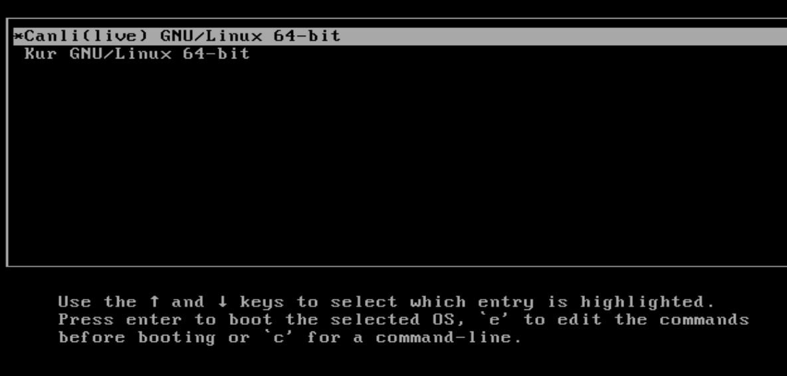
{kind=link}
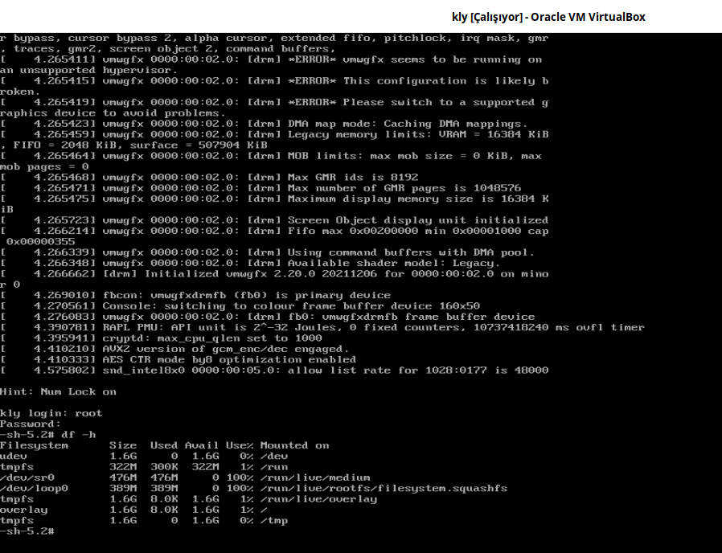
Canlı(live) sistem çalıştırıldığında overlay live bir sistemin açıldığını görmekteyiz. Canlı(live) sistemde kullanıcı adları ve parolaları;
Kullanıcı: root Parola: 1
Kullanıcı: live Parola: live
Sistem Kurulumu¶
Sistemin kurulumu için resimlerde görünen sıraya göre seçimler yapmalıyız.
{kind=link}
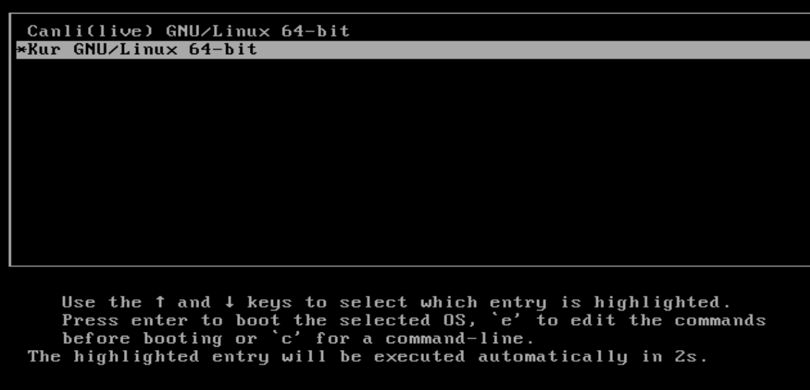
{kind=link}
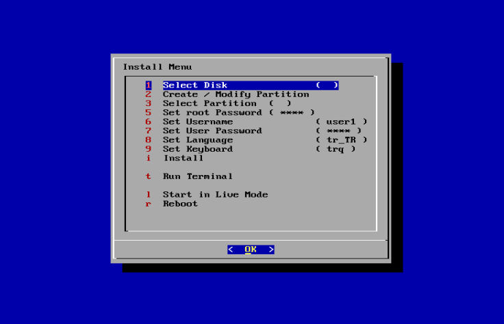
Kurulum menüsünde kullanıcı adları ve parolaları, klayve varsayılan olarak;
Kullanıcı: root Parola: 1
Kullanıcı: user1 Parola: 1
Dil : tr_TR
Klavye : trq
menüden değişiklik yapabilirsiniz. Değişiklik yapmadan sadece kurulum diskini ve disk bölümünü seçip Install(Yükle) işlemi yapabilirsiniz.
{kind=link}
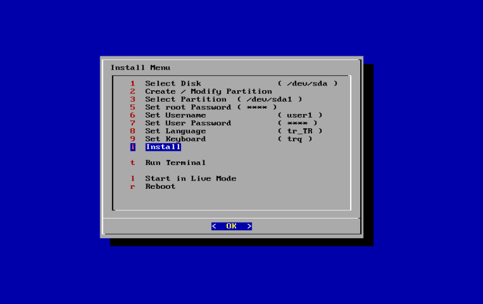
{kind=link}
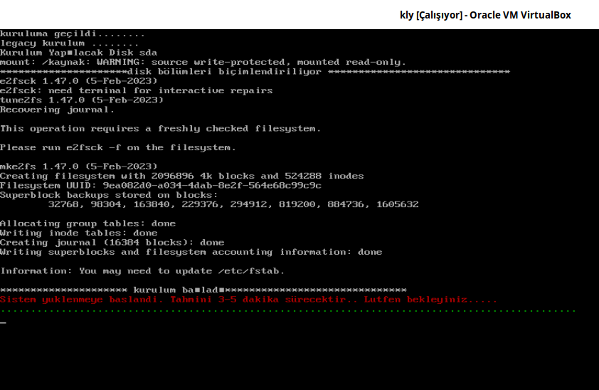
Sistemin Çalışması¶
Sistem kurulumu gerçekleştiğinde sistem resimde görüldüğü gibi açılmalıdır.
{kind=link}
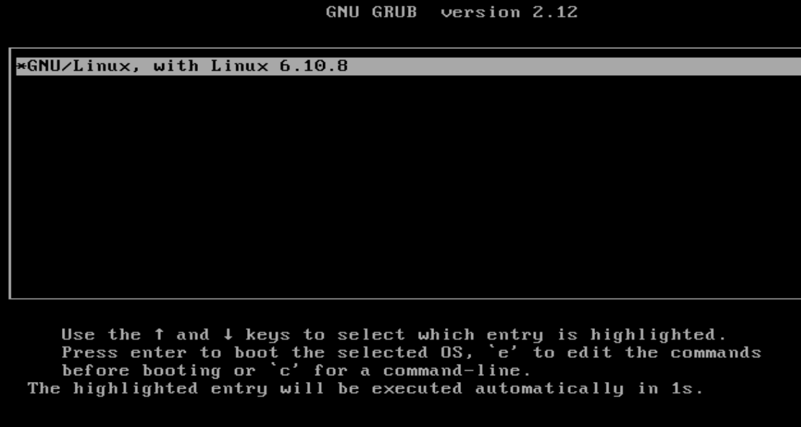
Sisteme user1 (parola=1) kullanıcısı olarak giriş yapıldığı görülmektedir.
{kind=link}
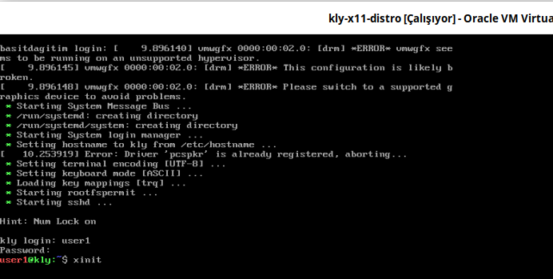
xinit çalışınca X Pencere Sistemine geçiş yapılacak.
xinit çalışınca X Pencere Sistemi aşağıdaki gibi açılacaktır.
{kind=link}
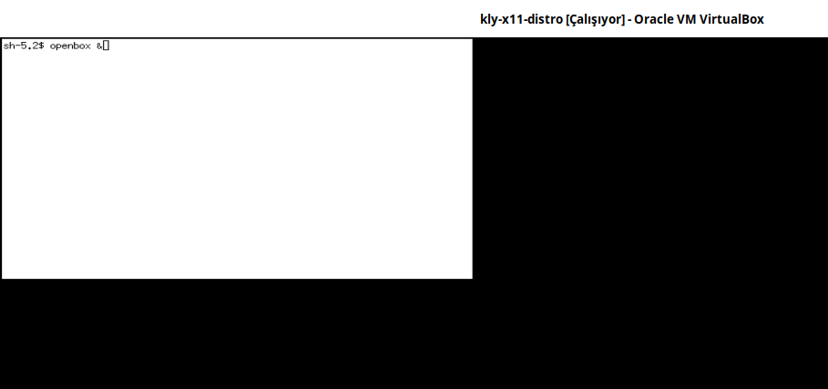
X Pencere Sistemi çalıştırılmış ve pencere yönetimini ve masaüstü ortamı için openbox çalıştırılıyor.
{kind=link}
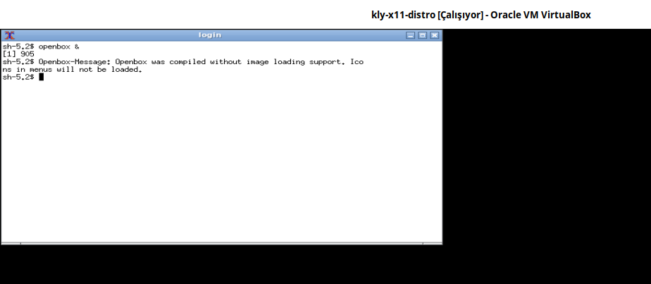
xcalc uygulamasının çalıştırılması aşağıda gösterilmiştir.
{kind=link}
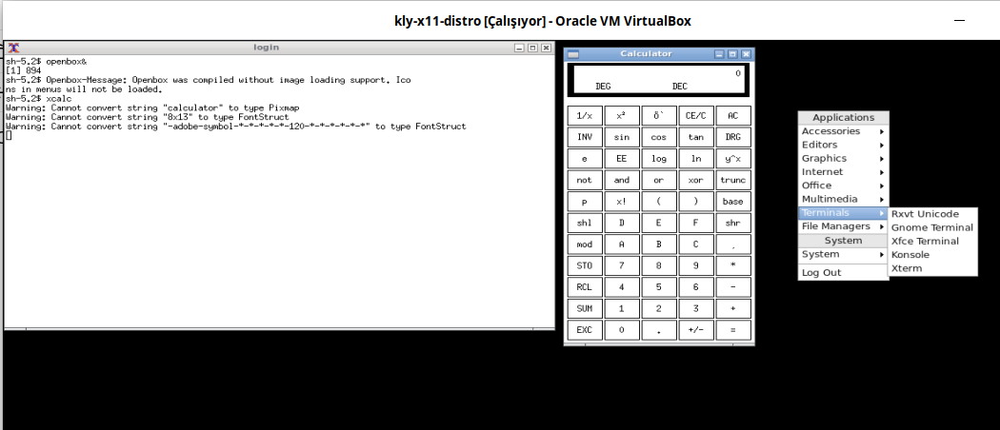